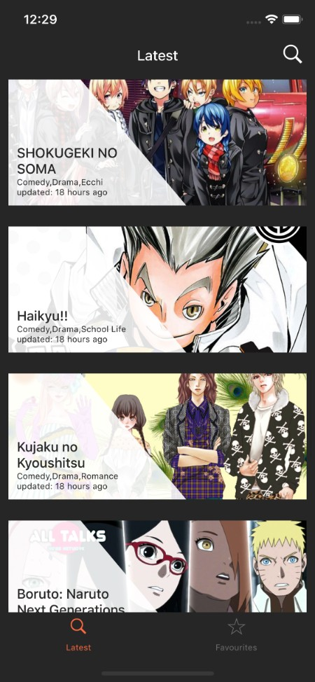
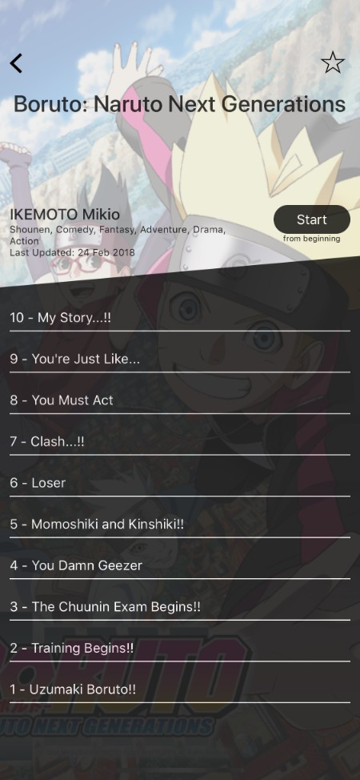
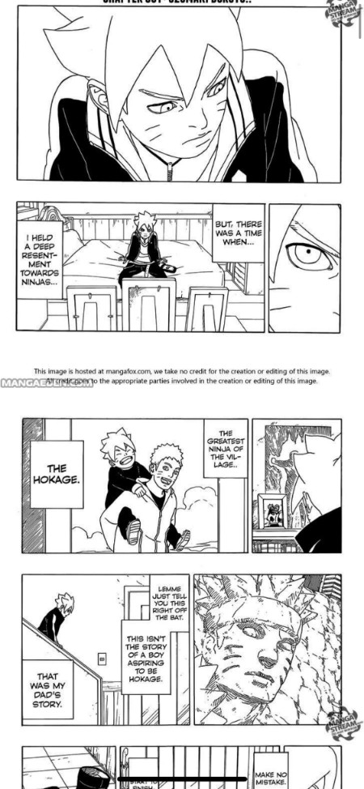
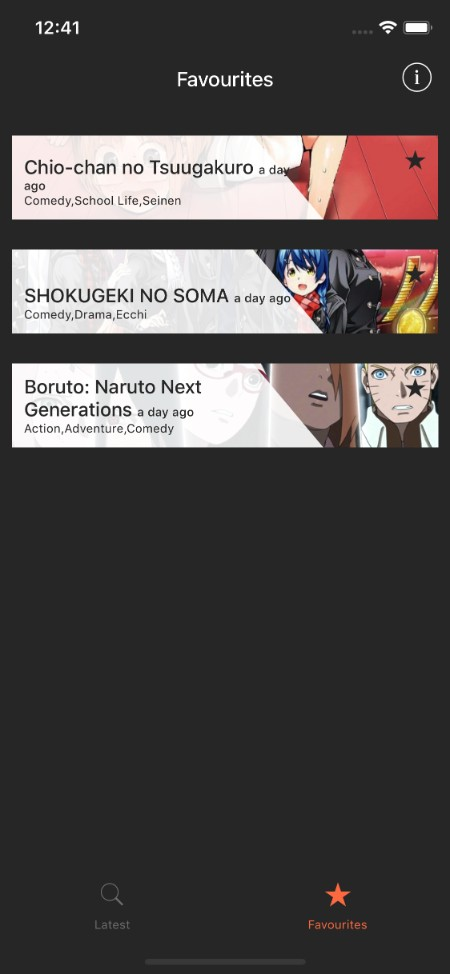

Experience
10+ years
Frontend, full stack, and technical leadership across product teams.
Full stack engineer
I work across frontend, backend, and product delivery with a strong bias for thoughtful UX, practical engineering, and momentum.
Quick scan
Experience
Frontend, full stack, and technical leadership across product teams.
Strength
Clear flows, practical interactions, and thoughtful polish without slowing delivery.
Industries
Consumer products and internal platforms with real operational complexity.
Selected experience
I reorganized the site around fast scanning, stronger storytelling, and clearer calls to action.
Featured preview
The original site buried this behind an interaction users had to discover. I pulled it forward so visitors can immediately see a tangible product example.



